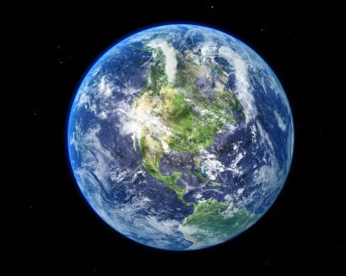

Tierra
Es el quinto planeta más grande y el tercero en cercanía al Sol del sistema solar, entre
otras cualidades como la rotación de su eje respecto a la elíptica, la composición
de su atmósfera rica en oxígeno o la presencia de agua líquida, esta distancia de la
Tierra al Sol -situada dentro de la zona de habitabilidad de una estrella- es la
responsable de que nuestro planeta sea el único del sistema solar en el que hasta el
momento se haya encontrado vida.
La atmósfera de la Tierra, la cual también nos protege de la radiación procedente
del Sol y del espacio, está compuesta por un 78 % de nitrógeno, un 21 % de oxígeno y un
1 % de otros ingredientes: el equilibrio perfecto para respirar y vivir. Los vastos océanos
de la Tierra proporcionaron un lugar conveniente para que comenzara la vida hace unos
3.800 millones de años. La Tierra es del mismo modo el único planeta del sistema solar
con una sola luna, la cual es, en muchos sentidos, responsable de hacer de la Tierra un
hogar habitable al regir las mareas o estabilizar la oscilación de nuestro planeta,
lo que ha hecho que el clima sea menos variable durante miles de años.
